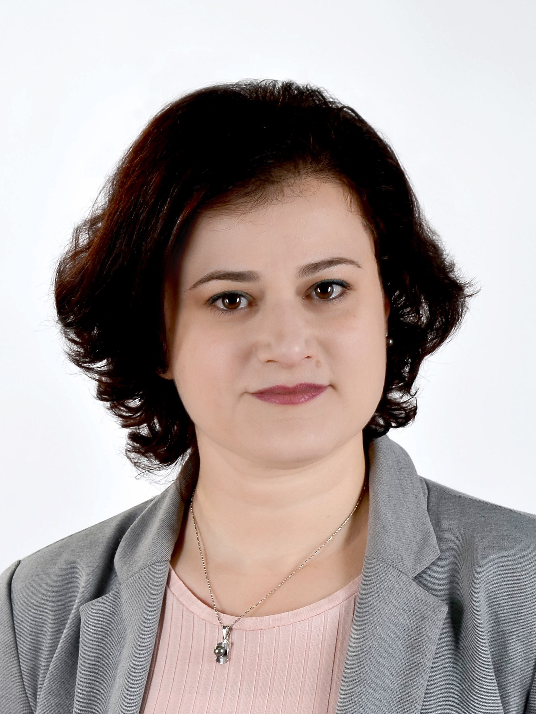

About Me
My research and teaching are driven by a simple but hard question: how do we build systems that are not just functional, but predictably correct — in time, in behavior, and under real physical constraints. I am an Associate Professor at ENSI, University of Manouba, Tunisia, and a twice-visiting scholar at UC Berkeley's EECS Department, where I collaborated with Edward A. Lee on the Lingua Franca and Accessors projects. My work spans real-time embedded platforms, hardware architecture, cyber-physical systems, and IoT, with a touch of formal verification where it matters most. Beyond research, I co-lead several projects between Tunisian and German institutions — mostly TU Dresden and HS Offenburg — funded by DAAD, bridging two research cultures through joint programs, student exchanges, and shared curricula. I serve on the program committees of RTAS, RTSS, and DATE, and publish in ACM TECS, IEEE ESL, and Proceedings of the IEEE. I am currently exploring the intersection of physical AI and autonomous embedded systems — where machine intelligence meets real-time constraints and physical actuation. I enjoy collaborating across the theory-to-implementation spectrum and I still write embedded code.
Areas of Interest
- Embedded Systems
- Cyber-Physical Systems
- Real-Time Systems
- Computer Architecture
- Formal Methods & Model Checking
- Internet of Things (IoT)

Open Source Contributions
- Lingua Franca — A polyglot coordination language for deterministic concurrent and distributed systems.
- Accessors / CapeCode — A component framework for IoT applications (swarmlets), built on Ptolemy II.
Education
- Ph.D. in Electrical Engineering — ENIT, University of Tunis El Manar, TN (2008)
Contribution to the description and formal verification of software architectures based on rewriting logic: Application to real-time systems
Distinction: Very honorable
Advisors: Kamel Barkaoui (CNAM, Paris, FR), Noureddine Ellouze and Amel Grissa-Touzi (ENIT, University of Tunis El Manar, TN) - DEA (M.S.) in Automatic Control and Signal Processing — ENIT, University of Tunis El Manar, TN (2003)
Deductive databases analysis tool based on extended predicate Petri nets
Advisors: Amel Grissa-Touzi (ENIT, University of Tunis El Manar, TN) - M.S. Eng. in Electrical Engineering — ENIT, University of Tunis El Manar, TN (2002)
National Diploma of Engineering (Diplôme d'Ingénieur), Electrical Engineering. A highly selective 5-year rigorous engineering program (accredited at the master's-in-engineering level)
Capstone: Automatic code generation of control programs for Siemens PLCs from PNML (Petri Net Markup Language) descriptions
Recent News
Publications • Talks • Tutorials • Posters • Presentations
Publications
Invited Talks
Tutorials
Posters
Presentations
Positions • Leadership • Research Stays
Positions
Teaching: Undergraduate and graduate courses in Embedded Systems, Cyber-Physical Systems, Real-Time Operating Systems, and Computer Architecture
Advising: M.S. Eng. projects and capstones, M.S. and Ph.D. theses; thesis committee member
Research: Embedded Systems, Cyber-Physical Systems, Time-Predictable Execution, and Timing-Aware Deployment of Learned Controllers (Physical AI)
Partnerships: Sagemcom Software & Technologies, Actia Engineering, Sofia Technologies (industry); TU Dresden, HS Offenburg (academic)
Host: Prof. Edward A. Lee
Role: Contributed to the Lingua Franca project. Formalized and implemented transient federates.
Host: Prof. Edward A. Lee
Role: Contributed to the Accessors project. Formalized and implemented mutation and deterministic temporal semantics.
Designed and developed the Voice Push platform
Designed and developed a holographic agent
Administrative Responsibilities & Academic Leadership
Directed the academic strategy and updated the 5th-year curriculum
Built long-term partnerships with industry and foreign universities, and promoted the specialization to students and companies
Organized workshops, seminars, hackathons and info sessions to prepare students for internships and the job market
Coordinated multi-instructor teaching teams for three core courses
Faculty advisor for the Robotics Club (Club Robotique ENSI, Association Robotique ENSI), and Open Source Software ENSI Club
Mentor students on the technical, logistical and strategic aspects of their projects
Research Stays Abroad
- Nov 2021, Aug 2021 • Project: CyPhySym
Key Achievements: Co-advised 1 M.S. thesis (A. Hamdi) and 1 Ph.D. thesis (H. Bouraoui); co-authored 1 workshop paper (PARMA-DITAM 2021) - Aug 2020 • Project: EngCPS&IoT
Key Achievements: Co-advised 1 M.S. thesis (O. Romdhani) and 1 Ph.D. thesis (H. Bouraoui); co-authored 1 workshop paper (PARMA-DITAM 2021). - May 2019, Jul 2019 • Project: Embedded Parallel Programming
Key Achievements: Co-advised 1 M.S. thesis (M. T. Aouayeb) and 1 Ph.D. thesis (H. Bouraoui); co-authored 1 workshop paper (PARMA-DITAM 2019).
Funded by: German Academic Exchange Service (DAAD)
- Sep 2021 • Project: IoTIC
Key Achievements: Co-authored 1 conference paper (ISTA 2021), groundwork for the co-advised Ph.D. of M. Abou Messaad. - Jul 2019 • Project: ContIoT
Key Achievements: Co-advised 1 M.S. thesis (H. Benaissa). - May 2018 • Project: RealIoT
Funded by: German Academic Exchange Service (DAAD)
- Jun–Jul 2013
Key Achievements: Co-advised the Ph.D. of A. Louati (defended 2015); co-authored 5 papers on Petri-net-based verification of UML diagrams (2012–2014).
Funded by: Association MedLink
- Oct 2004, May–Jun 2005, Apr–Jun 2006
Key Achievements: Doctoral research under the co-advice of Prof. K. Barkaoui.
Funded by: Ministry of Higher Education, TN
Current Courses • Guest Lecturer • Previously Taught
Levels: M.S. Eng. (Diplôme d'Ingénieur) = 2 preparatory years + 3 years of engineering school, accredited at the master's-in-engineering level (Years 3–5); M.S. = 2 years after a 3-year Licence (Year 4 = M.S. 1st year, Year 5 = M.S. 2nd year); Licence = Years 1–3. "Year" counts years after high school.
Current Courses
M.S. Eng. & M.S., Year 5
Based on EECS 149/249A at UC Berkeley
Hands-on: embedded labs on the Pololu 3pi+ robot (M.S. Eng.), robot simulator IR-Sim (M.S.)
M.S. Eng., Year 5
Textbook: Liu, J. W. S. (2000). Real-Time Systems. Pearson Education/Prentice Hall.
Served as class coordinator among involved instructors (2012-2016)
M.S., Year 4
Forked from EECS 149/249A at UC Berkeley
Guest Lecturer
M.S. Eng., Year 3 • 2025 - 2026
M.S. Eng., Year 4 • 2017 & 2019
M.S. Eng., Year 3 • 2019 -2020
M.S., Year 5 • 2017 - 2019
Previously Taught
- Advanced Architectures and Parallel Programming [EN, FR]
M.S. Eng., Year 5 • 2021 – 2024
Based on CS 267 at UC Berkeley - Formal Methods []
M.S., Year 4 • 2021 – 2022 - Programming Connected Objects [EN]
M.S. Eng., Year 5 • 2021 – 2023 - Introduction to Embedded Systems [FR]
M.S. Eng. & M.S., Year 4 • 2012 - 2019
Elaborated in collaboration with ST Microelectronics, TN
Served as class coordinator among involved instructors - Microprocessor Design [FR]
M.S. Eng., Year 4 • 2009 - 2019
Based on CS 152 at UC Berkeley
Served as class coordinator among involved instructors (2011-2019) - Computer Architecture [FR]
M.S. Eng., Year 3 • 2009 - 2012
- Computer Architecture [FR]
Licence, Year 2 • 2007 – 2009 - Digital Circuits [FR]
Licence, Year 2 • 2007 – 2009
- Computer Architecture [FR]
M.S. Eng., Year 3 • 2003 – 2007 - Algorithms and C/C++ Programming [FR]
M.S. Eng., Year 3 • 2003 – 2007
Initiatives
Venue: Technopole de la Manouba, Manouba, TN
Featuring Dr. Scott Eberhardt
Funded by DAAD (Transformation Program Line 2)
Formal applicant: TU Dresden, DE
Partners:ENSI, University of Manouba, TN
- Organized the thematic session The Cyber and the Physical Symbiosis with TU Dresden (program, speakers, logistics)
- Funded the research stay of M.S. student A. Hamdi at TU Dresden (co-advised with Prof. J. Castrillon)
- Co-advised the Ph.D. of H. Bouraoui, TU Dresden (with Prof. J. Castrillon)
- Funded reciprocal faculty visits (see Research Stays)
Funded by DAAD (Transformation Program Line 2)
Formal applicant: HS-Offenburg, DE
Partners:ENSI, University of Manouba, TN
- Coordinated and mentored Tunisian teams in the Bosch Sensortec IoT Innovation Challenge
- Funded the finalist teams' trip to Stuttgart for the final pitch and award ceremony
- Funded the research stay of Ph.D. student M. Abou Messaad at HS Offenburg (co-advised with Prof. A. Sikora)
Funded by DAAD (Transformation Program Line 2)
Formal applicant: TU Dresden, DE
Partners:ENSI, University of Manouba, TN
- Organized the seminar series Design and Programming Cyber-Physical Systems and IoT Applications (moved online due to COVID-19)
- Funded the research stay of M.S. student O. Romdhani at TU Dresden (co-advised with Prof. J. Castrillon)
- Co-advised the Ph.D. of H. Bouraoui, TU Dresden (with Prof. J. Castrillon)
- Funded reciprocal faculty visits (see Research Stays)
Funded by DAAD (Transformation Program Line 2)
Formal applicant: HS-Offenburg, DE
Partners:ENSI, University of Manouba, TN
- Organized the 3rd IoT Hackathon with HS Offenburg
- Funded the research stay of Ph.D. student M. Abou Messaad at HS Offenburg (co-advised with Prof. A. Sikora)
Funded by DAAD (Transformation Program Line 2)
Formal applicant: University of Hamburg, DE
Partners:ENSI, University of Manouba, TN & HS-Offenburg, DE
- Contributed to the 3rd IoT Hackathon (5G+IoT project): the Drylands partners defined the hackathon topic and delivered online talks on it
Funded by DAAD (Transformation Program Line 2)
Formal applicant: TU Dresden, DE
Partners:ENSI, University of Manouba, TN
- Organized the round table 'Research landscape and opportunities for technology transfer' (ENSI, Dec 3, 2019)
- Hosted Prof. J. Castrillon and his Ph.D. students H. Bouraoui and A. Goens (TU Dresden) at ENSI to teach a 15-hour compilers course (M.S. Eng., Year 5)
- Co-advised 1 M.S. Eng. capstone project and the M.S. thesis of M. T. Aouayeb
- Co-advised the Ph.D. of H. Bouraoui, TU Dresden (with Prof. J. Castrillon)
- Funded reciprocal faculty visits (see Research Stays)
Funded by DAAD (Transformation Program Line 2)
Formal applicant: HS-Offenburg, DE
- Organized the 2nd IoT Hackathon with HS Offenburg
- Organized a study trip to Germany for 10 Tunisian students and 2 faculty members
- Co-advised 1 M.S. Eng. capstone project and the M.S. thesis of H. Benaissa
- Funded reciprocal faculty visits (see Research Stays)
Funded by DAAD (Transformation Program Line 2)
Formal applicant: HS-Offenburg, DE
Partners:ENSI, University of Manouba, TN
- Organized the 1st IoT Hackathon with HS Offenburg
- Hosted Prof. A. Sikora (HS Offenburg) at ENSI to teach a 30-hour IoT course (M.S. Eng., Year 5)
- Co-advised 3 M.S. Eng. capstone projects
- Funded reciprocal faculty visits (see Research Stays)
Funded by DAAD (Transformation Program Line 2)
Formal applicant: HS-Offenburg, DE
Partners:TU Dresden (ZIH and cfaed), DE & ENSI, University of Manouba, TN & ENIT, University of Tunis El Manar, TN
- Organized the IoT School & Workshop 2016 across the three partner institutions
- Co-advised 1 M.S. Eng. capstone project
- Funded reciprocal faculty visits
Venue: Cité des Sciences, Tunis, TN
Funded by DAAD (Transformation Program Line 2)
Formal applicant: cfaed, TU Dresden, DE
Partners:ENIT, University of Tunis El Manar, TN
Advising
Ongoing
Characterization, Modeling and Deadline-Aware Optimization of CPU-Only Vision-Language Model Inference on Edge and Embedded Platforms
ENSI, University of Manouba
Co-advised with Majdi Jribi (ENSI, University of Manouba)
Adaptivity in deploying applications onto heterogeneous embedded platforms
TU Dresden
Co-advised with Jeronimo Castrillon (TU Dresden)
Past Students
Imitation-Based Reinforcement Learning for Delay-Aware Locomotion: Reward Shaping and Runtime Monitoring for Embedded Deployment
ENSI, University of Manouba
AeroTrack: Active Perception and Closed-Loop Control for UAV Swarm Tracking: Adaptive Early-Exit Inference and Distribution-Aware Association in Photorealistic Simulation
ENSI, University of Manouba
CPU-Only LLM Inference: Compute, Bandwidth, and Capacity Limits: A Performance Model for llama.cpp on Consumer and Embedded Hardware
ENSI, University of Manouba
Contextual Data Fusion in Collaborative Body Sensor Networks: Application to e-Emergency
ENSI, University of Manouba
Towards Low-Cost, Low-Power Hardware Accelerators for Machine Learning-Based Cybersecurity
ENSI, University of Manouba
Co-advised with Narjes Bellamine (ENSI, University of Manouba) and Axel Sikora (HS Offenburg)
Towards Rapid Prototyping and Simulation of mAPN Models
ENSI, University of Manouba
Co-advised with Jeronimo Castrillon (TU Dresden) and Hasna Bouraoui (TU Dresden)
MAPN: Assessment Against State-of-the-Art Dynamic Dataflow MoC
ENSI, University of Manouba
Co-advised with Jeronimo Castrillon (TU Dresden) and Hasna Bouraoui (TU Dresden)
Exploring Mesh-of-Tree Architecture and Developing a Dedicated Router
ENSI, University of Manouba
Study of the Impact of Scheduling Frequency on the Time Predictability of FlexPRET
ENSI, University of Manouba
Co-advised with Jeronimo Castrillon (TU Dresden)
Narrowband IoT Extension for the NS-3 Simulator
ENSI, University of Manouba
Co-advised with Axel Sikora (HS Offenburg)
Architecture for Embedded Image and Stereo Vision Processing, Based on Chisel
ENSI, University of Manouba
Architecture for Embedded Deep Learning Processing, Based on Chisel
ENSI, University of Manouba
Design Methodologies for Reconfigurable Real-Time Vision Architectures: Focus on Stereovision Systems
EPT, University of Carthage
Co-advised with Rabah Attia (EPT, University of Carthage)
Fault Diagnosis Using Hybrid Automata
ENIT, University of Tunis El Manar
Co-advised with Nejib Ben Hadj Aoulane (ENIT, University of Tunis El Manar)
Contribution à la Formalisation et à la Vérification des Diagrammes Dynamiques UML 2 à base des Réseaux de Petri
ENIT, University of Tunis El Manar & CNAM Paris
Co-advised with Kamel Barkaoui (CNAM Paris) and Noureddine Ellouze (ENIT, University of Tunis El Manar)
ENSI, University of Manouba
EECS Department, UC Berkeley
Supporting the ongoing collaboration between 3D Rationality and UC Berkeley.
UC Berkeley, iCyPhy Research Center
ITES – Tunisian Institute of Strategic Studies
DAAD (German Academic Exchange Service) Tunis
Organizing • Academic Services • D/T Committee • Panel Chairing • Miscellaneous
Organizing
J. Castrillón-Mazo (TU Dresden, DE), E. A. Lee (UC Berkeley, US), C. Pagetti (ONERA – Toulouse, FR)
Schloss Dagstuhl, Wadern, DE Link
Taipei, TWCo-located with ESWEEK 2025 Link
Academic Services
- TPC member, Workshop on Reactive Cyber-Physical Systems (ReCPS), co-located with DATE: 2026
- TPC member, IEEE Real-Time and Embedded Technology and Applications Symposium (RTAS): 2026
- TPC member, Design, Automation and Test in Europe Conference (DATE): 2025, 2026
- TPC member, Workshop on Time-Centric Reactive Software (TCRS): 2023, 2024, 2025
- TPC member, IEEE Real-Time Systems Symposium (RTSS): 2021, 2022, 2023
- Reviewer, IEEE Access, 2023, 2024, 2025
Dissertation/Thesis Committee
Dissertation: 'Deterministic Networks for Low-Latency Cyber-Physical Systems'
NTNU, Trondheim, NO
Thesis: 'Situational Awareness ML-Assisted Unmanned Aerial System Traffic Management'
ENSI, University of Manouba, TN
Panel Chairing
2nd Workshop on Time-Centric Reactive Software (TCRS 2024) at ESWEEK 2024
Miscellaneous
A special issue of Springer journal Real-Time Systems.
Analysis, Design, and Control of Predictable Interconnected Systems, DE.
German Academic Exchange Service (DAAD)
- ITEC Program: Training Educators on AI Awareness and Technology Integration (Jul 2025), NITTTR, Chennai, India (Indian Technical and Economic Cooperation). 2-week program, 16–29 July 2025
- Introduction to Augmented Reality and ARCore (May 2021), Google AR & VR (Coursera). Completed course (w/o certificate), Grade 100%
- Introduction to TensorFlow for Artificial Intelligence, Machine Learning, and Deep Learning (May 2020), deeplearning.ai (Coursera). Certificate, Grade 99.28%
- LoRa Ecosystem - Networking and Workshop (Jan 2019), SUP'COM, TN. 1-day training
- Interviews: a method to collect data during the research process (Oct 2019), Christian Achrainer (DAAD funded). 1-day training
- Effective Cooperation in Teams (Apr 2019), Sonja Drewes (DAAD funded). 1-day training
- Lean Startup and customer development (Sep 2018), Bob Dorf (Open Startup Tunisia). 2-day training for mentors
- Self-management (Oct 2018), Heba Salama (DAAD funded). 1-day training
- Pre-Empting & Managing Conflicts (Nov 2017), Heba Selim (DAAD funded). 1-day training
- Student Mentor (Mar 2020): Mentoring students at the Hackathon within the International Winter School "IoT meets AI", organized by SUP'COM's IEEE Student Branch
- Student Mentor (Oct–Nov 2018): Mentoring students: Open Startup Tunisia competition
- Volunteer (2017) — Cragmont Elementary School, Berkeley, CA
- Youth Leader and Coordinator (1997 – 2005) — Astronomy club of the Tunisian Association of Youths and Science (AJST): Organized astronomy training sessions and public events
- Founder and Treasurer (1999 – 2001) — "Andromeda Astronomy Club" at ENIT, University of Tunis El Manar, TN
- Founder and General-secretary (1997 – 1999) — "Astronomy Club" at IPEIT, TN